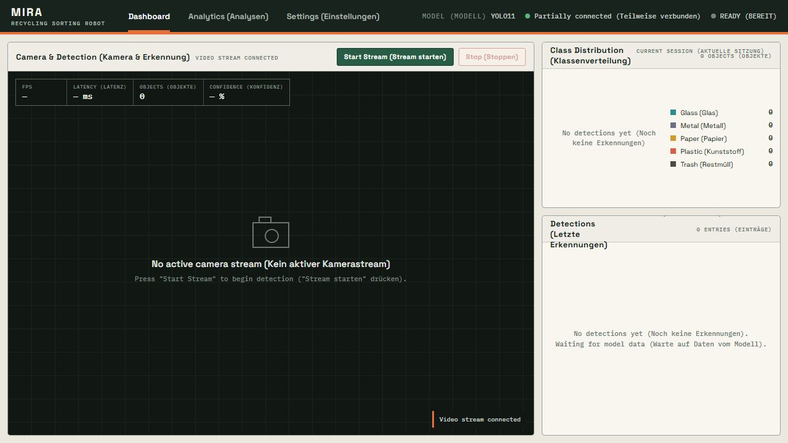

New to MIRA Install and detect Working on models Train and compare Building integrations Use the API
Tutorial
Quickstart
Install MIRA from PyPI, download a trained model, and open a local camera stream.
1. Install from PyPI
PowerShell Copy
python -m venv .venv
.venv\Scripts\Activate.ps1
python -m pip install --upgrade pip
python -m pip install mira-aiPackage: mira-ai on PyPI
2. Download a model
PowerShell Copy
mira download --list
mira download mira_exp019.pt3. Check the environment
PowerShell Copy
mira doctor
mira models4. Start detection
PowerShell Copy
mira live --model mira_exp019.ptExpected result A camera window opens with class labels, bounding boxes, confidence values, and optional ByteTrack IDs.
Reference
Configuration
mira.yaml is the shared configuration source for classes, paths, training defaults, inference thresholds, and export settings. CLI options override these values for one run.
mira.yaml Copy
classes:
names: [glass, metal, paper, plastic, trash]
training:
default_model: yolo11n.pt
default_epochs: 120
default_batch_size: 32
default_imgsz: 640
inference:
reject_threshold: 0.55
default_conf: 0.5
default_iou: 0.45Inspect the effective configuration with .\mira config.
Explanation
Architecture
The system separates camera capture, inference, presentation, and research tooling so each part can be tested independently.
Camera service USB or IP stream
→
Frame buffer latest frame, thread safe
→
Inference engine PT, TFLite, adapters
→
Outputs window, REST, WebSocket
Key modules
src/inference_engine.pyModel loading, frame skipping, latency history, and cleanup.
src/dashboard/backend/FastAPI routes, camera orchestration, and WebSocket transport.
src/pipeline/Dataset handling, strategies, validation, training, and benchmarking.
src/cli/Plugin-registered commands for local and cloud workflows.
How-to
Run live inference
Launch the interactive model picker or specify a model directly.
PowerShell Copy
.\mira live
.\mira live --model mira_exp019.pt
.\mira live --model mira_exp019.pt --camera 1 --resolution 1280x720
.\mira live --model mira_exp019.pt --conf 0.25 --reject 0.55Confidence tiers
Below confidence Ignored Detections below --conf are not drawn.
Uncertain Visible, not counted Detections between confidence and reject thresholds are labelled unsicher.
Confident Visible and counted Detections above the reject threshold contribute to inventory.
How-to
Use the dashboard
The dashboard runs locally. It does not upload camera frames to a public server.
PowerShell Copy
.\mira dashboard
.\mira dashboard --port 8080
.\mira dashboard --host 0.0.0.0Open http://127.0.0.1:8000. Select a camera, load a model, and start the stream. The interface exposes class distribution, recent detections, FPS, latency, CPU, and memory history.

The dashboard waits for a local model and camera stream.
How-to
Prepare datasets
Dataset files stay outside Git. Registry metadata and processing code keep their origins and transformations traceable.
PowerShell Copy
.\mira datasets
.\mira merge --sources taco_trashnet roboflow --output datasets/mira_tnr
.\mira validate --dataset datasets/mira_tnrSource families
TACO for litter in varied contexts.TrashNet for material classification images.Roboflow Trash Detection for YOLO-formatted waste objects.Project-specific tabletop data for controlled detector training.
Licensing Check each source license before redistributing data. The repository includes provenance documentation, not the datasets themselves.
How-to
Train and evaluate
Experiment YAML files record model, dataset, image size, epochs, batch size, and augmentation. Result serialization adds timing and Git metadata.
PowerShell Copy
.\mira train --config experiments/exp014_yolo11n_multidataset.yaml
.\mira eval-yolo --model models/detection/mira_exp019.pt
.\mira benchmark --models models/detection/mira_exp019.pt models/detection/mira_exp019_int8_640.tflite
.\mira generate kaggle --config experiments/exp014_yolo11n_multidataset.yamlWhat gets measured
Detection quality Precision, recall, mAP50, mAP50-95, IoU, and per-class metrics.
Runtime Latency, throughput, model size, and platform information.
Provenance Configuration, command arguments, Git SHA, and working-tree state.
Safety Backups prevent result serialization from silently overwriting earlier files.
How-to
Export for edge
Export the PyTorch reference model, then benchmark the converted artifact before choosing it for deployment.
PowerShell Copy
.\mira export --model models/detection/mira_exp019.pt --formats tflite_int8
.\mira diagnosticsCurrent boundary The TFLite model is included, but Raspberry Pi latency and memory measurements are still pending.
Reference
Models
Recommended detector mira_exp019.pt
mAP50 90.58%
Size 5.47 MB
Input 640 px Edge candidate mira_exp019_int8_640.tflite
mAP50 86.2% at 320 px export benchmark
Size 3.04 MB
I/O FP32
Run .\mira models to list all discovered artifacts. Model metadata sidecars describe task, architecture, classes, and expected input shape.
Reference
CLI commands
Run
liveStart webcam inference.
dashboardLaunch the FastAPI dashboard.
downloadFetch published model artifacts. Research
trainRun a configured training strategy.
eval-yoloEvaluate a detector.
benchmarkCompare accuracy and latency.
exportCreate TFLite or ONNX outputs. Data
datasetsList registered sources.
mergeBuild a unified YOLO dataset.
validateCheck structure and labels. System
doctorRun project health checks.
diagnosticsInspect hardware support.
configDisplay effective settings.
wizardGuide training setup.
Reference
Dashboard API
The local FastAPI service exposes control and observation endpoints.
GET /api/statusSystem and stream state.
GET /api/modelsDiscovered model files.
POST /api/camera/initializeInitialize camera input.
POST /api/model/loadLoad a model.
POST /api/stream/startBegin inference.
POST /api/stream/stopStop inference.
GET /api/statisticsCurrent class totals.
GET /api/metrics/historyLatency and system history.
GET /api/detections/recentRecent detection records.
WS /ws/videoEncoded frames and overlays.
WS /ws/controlConfiguration and state events.
Explanation
Known limitations
Crumpled white paper can be confused with plastic at high confidence.
End-on metal cans are underrepresented in training data.
Heavy overlap and occlusion reduce bounding-box quality.
The broad trash category remains difficult outside controlled tabletop validation.
Raspberry Pi and robotic sorting benchmarks are pending.
The dashboard has unit coverage but no tracked end-to-end camera and browser verification artifact.
No matching section
Try a broader term such as model, camera, dataset, or API.